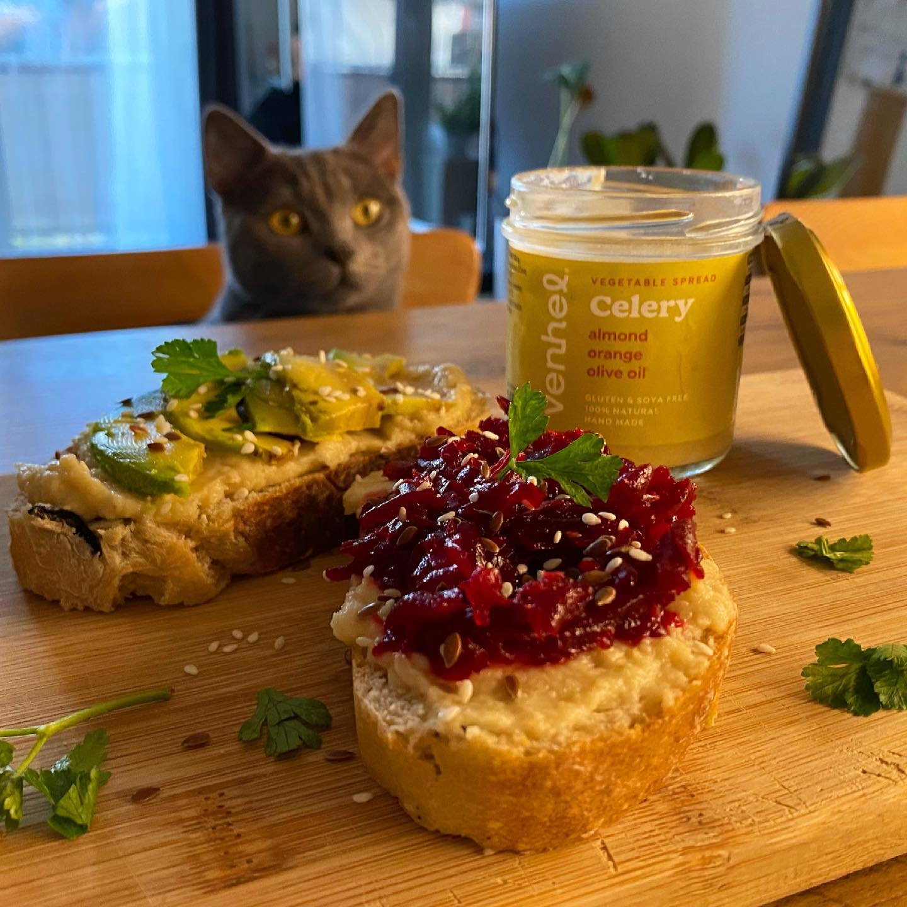

Zelerová nátierka podľa @venhel_sk — Normy Jedál
A akým pohľadom sa pozeráte na jedlo vy?🤣
Povieme vám, že sa ani mačičke nedivíme, pretože tieto kombinácie s ručne robenou - prírodnou - zeleninovou nátierkou sú bomba💣!
Vyskúšali sme verziu s avokádom🥑, ktoré sme pokvapkali citrónom🍋, jemne posypali soľou a sezamom. V druhej farebnejšej kombinácii sme zelerovú nátierku spestrili nakldanou cviklou a tiež sme si pridali sezam pre rozmanitejšiu textúru a chuť. A teda povieme vám, je to pastva nie len pre oči, ale i chuťové bunky😋.
Takýto zdravý snack si ľahko pripravíte doma či už ako slané raňajky, brunch alebo olovrant. Doprajte si k tomu šálku VENHEL kávičky☕️ a pomaly vychutnávajte.